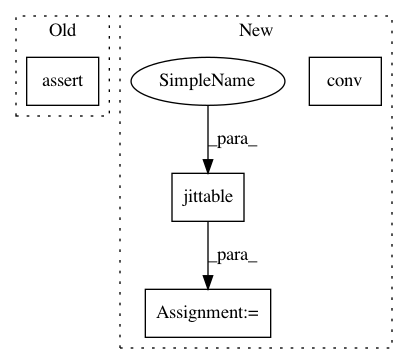

bef529dbb4eb10b1ec1cad14a6f630dd472dd73b,test/nn/conv/test_tag_conv.py,,test_tag_conv,#,5
Before Change
conv.eval()
jitconv.eval()
jittedconv.eval()
assert (torch.abs(conv(x, edge_index) -
jitconv(x, edge_index)) < 1e-6).all().item()
assert (torch.abs(conv(x, edge_index) -
jittedconv(x, edge_index)) < 1e-6).all().item()
assert conv(x, edge_index, edge_weight).size() == (num_nodes, out_channels)
After Change
assert jit_conv(x, edge_index, edge_weight).tolist() == out2.tolist()
conv = TAGConv(in_channels, out_channels, normalize=False)
out = conv(x, edge_index, edge_weight)
assert out.size() == (num_nodes, out_channels)
jit_conv = conv.jittable(x=x, edge_index=edge_index,
edge_weight=edge_weight)
jit_conv = torch.jit.script(jit_conv)
assert jit_conv(x, edge_index, edge_weight).tolist() == out.tolist()
In pattern: SUPERPATTERN
Frequency: 3
Non-data size: 4
Instances
Project Name: rusty1s/pytorch_geometric
Commit Name: bef529dbb4eb10b1ec1cad14a6f630dd472dd73b
Time: 2020-06-08
Author: matthias.fey@tu-dortmund.de
File Name: test/nn/conv/test_tag_conv.py
Class Name:
Method Name: test_tag_conv
Project Name: rusty1s/pytorch_geometric
Commit Name: f8449d8979d825d7b902bed171df80a80872e7a5
Time: 2020-06-08
Author: matthias.fey@tu-dortmund.de
File Name: test/nn/conv/test_appnp.py
Class Name:
Method Name: test_appnp
Project Name: rusty1s/pytorch_geometric
Commit Name: f3d0dfcb7caf50d123df02773495e5b52a92bd76
Time: 2020-06-09
Author: matthias.fey@tu-dortmund.de
File Name: test/nn/conv/test_gat_conv.py
Class Name:
Method Name: test_gat_conv